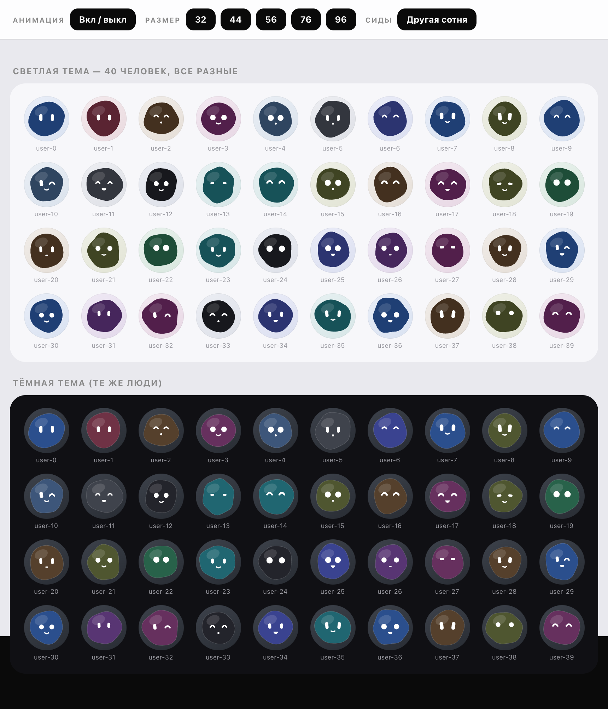
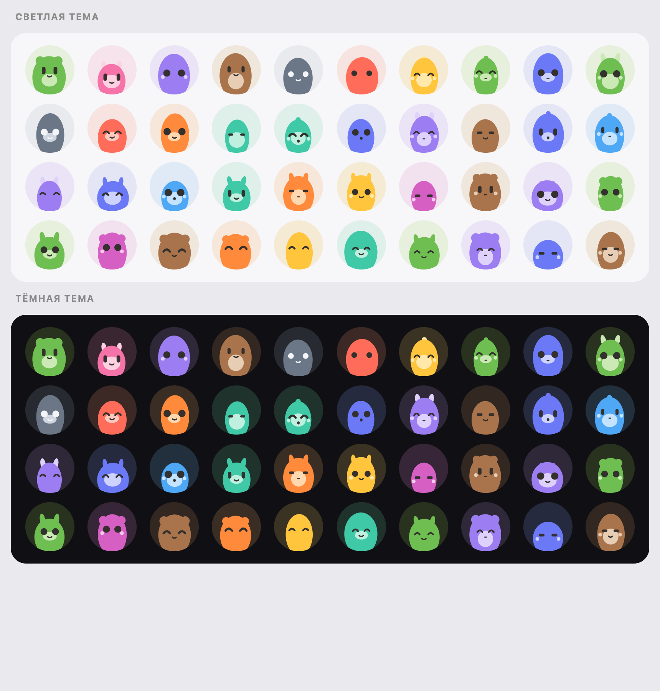
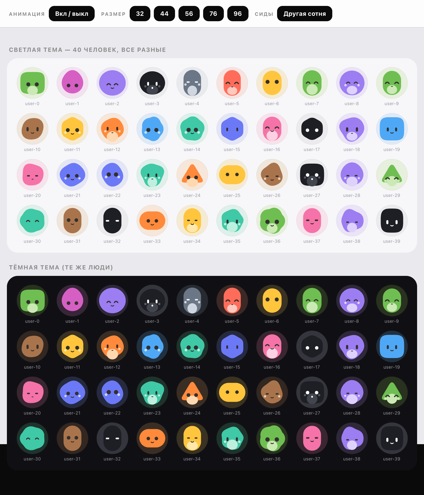
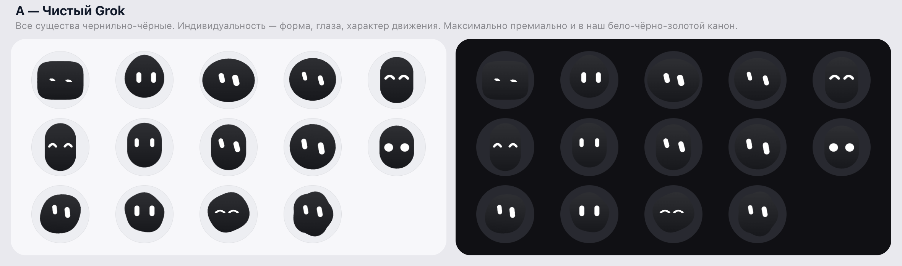
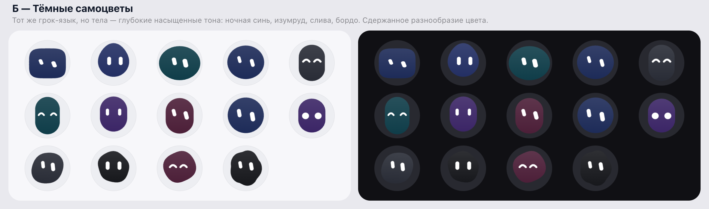
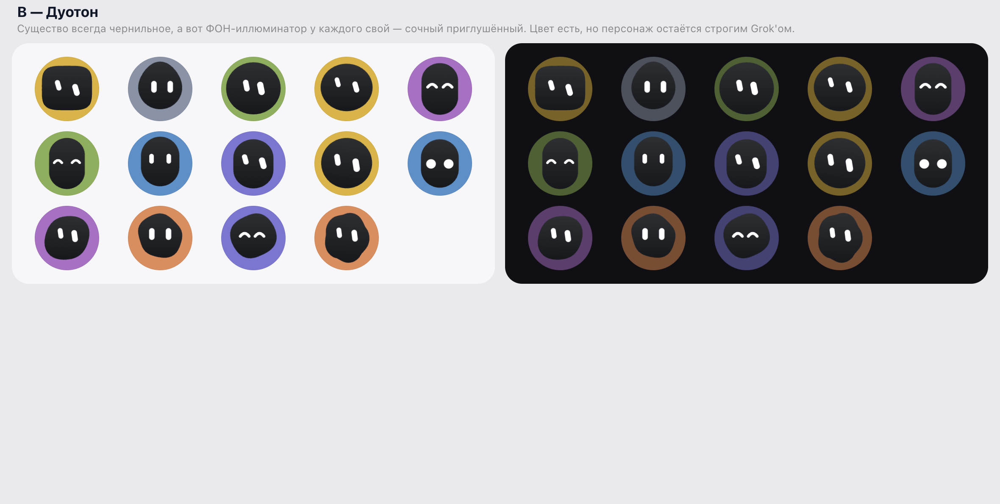
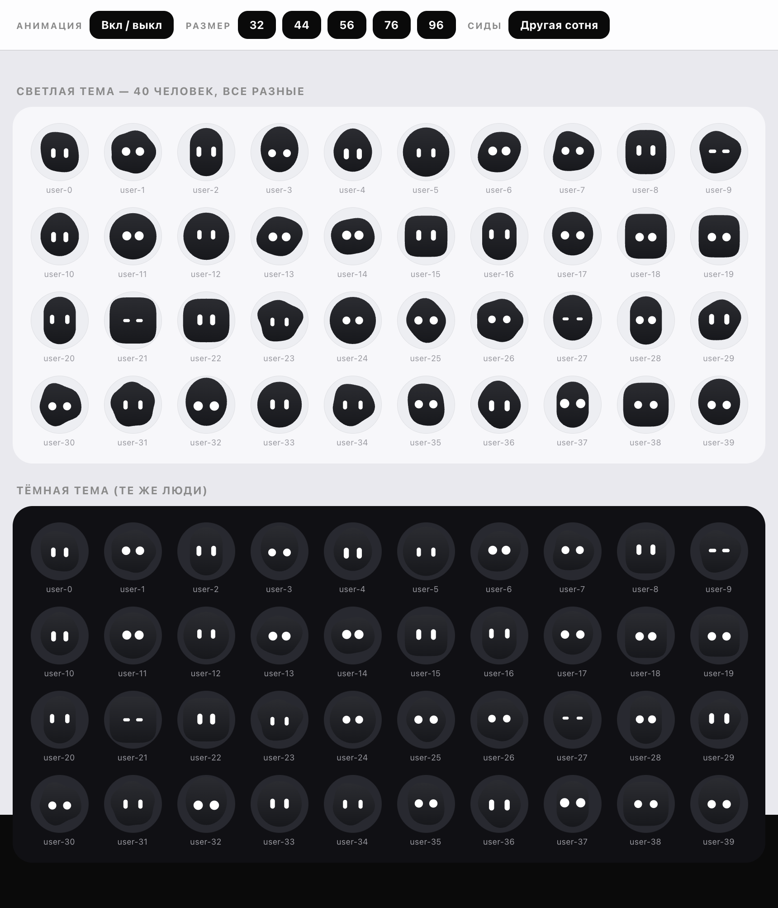
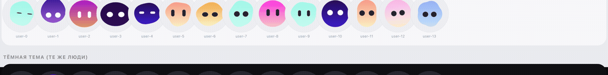

Первый заход: волнистый контур из синусоид, 12 глубоких тонов, белые глаза, глянцевый блик. Вердикт: «блик стрёмный, цвета бледные».

Сочные пары «тело + акцент», посадка «сидит в иллюминаторе», ушки·зайки·рожки·хохолки, пузико и щёчки. Вердикт: «однообразные овалы, непонятные животные». Эта эра не была закоммичена — реконструкция по коду.

9 узнаваемых силуэтов (круг · галька · сквиркл · капсула · пилюля · треугольник · шестиугольник · облако · капля), 13 сочных палитр, включая чернильную с белыми глазами. Вердикт: «стрёмные, туповатые — хочу Grok».

Питч трёх стилевых баз перед раскатом: А — чистый чёрный Grok, Б — тёмные самоцветы, В — дуотон (чернильное существо на цветном фоне). Выбрано направление А.



Все существа чернильные, глаза строго прямые, появилась библиотека характеров анимаций (мечтатель со взглядом ввысь, попрыгун, соня…). Вердикт: «монохромно, и анимации почти не видны».

Тела — 12 градиентов приложения (для светлой и тёмной темы свои), жесты усилены в 2.5 раза, зоопарк характеров: волчок 360°, изумлённый с расширением глаз, подозрительный прищур, щенок с «бровью», подмигиватель, да-да/нет-нет, клюющий носом, сердцебиение, потягуша, подглядыватель и другие. Ниже — ЖИВЫЕ существа, прямо движком приложения:
И то же самое гифкой (если движок не загрузился):
